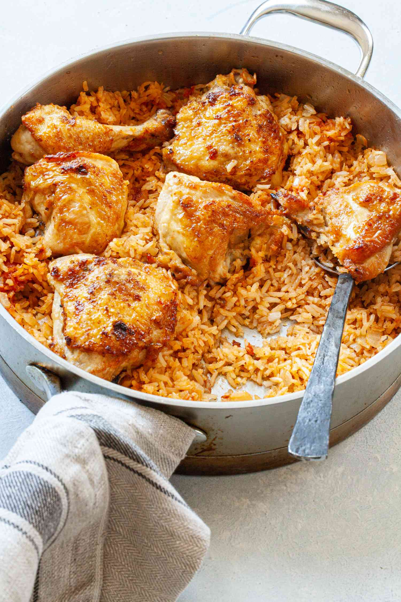

Arroz Con Pollo

Arroz Con Pollo Recipe
Arroz Con Pollo is a dish that tastes like home to me. Growing up, this dish
was cooked pretty frequently. This dish is simple and
delicious and a recipe that was handed to my sister and me
when we left our parent's house for the first time. This was
probably one of the first things my sister and I cooked
for ourselves living independently for the first time.
I would say that this is a family recipe but it's truly not,
It is the recipe on the back of the Fiesta Spanish Rice
Spice shaker, this does not make it any less delicious.
With food comes language, in spanish, arroz tranlates
to rice and pollo tranlates to spanish. This dish being
chicken and rice, simple and delicious.
Ingredients
- 1 Tablespoon of cooking oil
- 1 Cup of uncooked rice
- 1 7oz can of Tomato Sauce
- 1 level Tablesppon of Boiner's Fiesta Brand Spanish Rice Seasoning
- 2 cups of water
- 1 lb of bone in chicken thighs
Instructions
- Heat the oil in a pan with a tight fitting lid.
- Place chicken thighs, skin down, in the hot oil and allow to brown and cook slightly.
- Remove the chicken thighs and set aside.
- Add the rice to that same pan and fry it until it starts to turn brown
- Stir the tomato sauce, Spanish Rice Seasoning, water and add the browned chicken, pushing the chicken under the water to be mostly submerged, and bring to a boil.
- Cover with a tight fitting lid and simmer on low heat for 20-30 minutes, until the water is absorbed and chicken is fully cooked.
Serve on its on or with a side of sweet, crispy corn and fried potatoes.